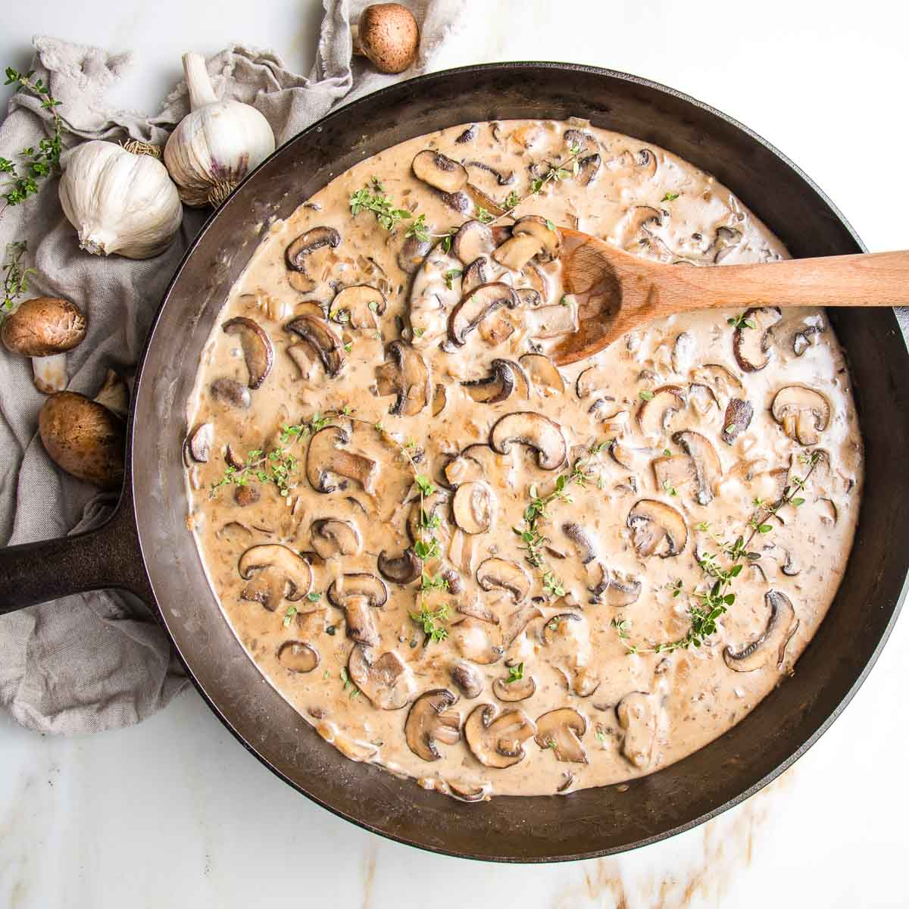

Mushroom Stroganoff
About this recipe

This is one of the most comforting meals to have on a cold winter's evening. It's a vegetarian take on the Russian beef stroganoff dish, but this plate is still packed with warming and peppery flavours.
Ingredients
- 1 pack of porcini mushrooms
- 1 cube of vegetable broth
- 300ml of water
- 1/2 package of tiburon style pasta
- 3 tablespoons of flour
- 1/2 tub of herb and garlic cream cheese
- 1 tablespoon butter
- Salt, pepper and garlic powder to taste
Steps
- First, cut your mushrooms into quarters, so that they are chunky and biteable
- Next, in a pan on high heat, throw your mushrooms in with the 1 tablespoon of butter. Generously pepper the mushrooms, and add salt and garlic powder to your liking
- Boil the water for your pasta. After 7-8 minutes, your mushrooms have softened. turn down the heat to medium and toss in your 3 tablespoons of flour. Make sure to continuously mix well for 2-3 minutes while the flour sticks to the mushrooms.
- Add the past to the water and boil for 8-9 minutes
- In the mean time, add the stock cube to the water, and add the water to the mushrooms. Turn the heat up to high and mix until all the flour is dissolved, it should leave you with a thick, almost gravy like consistency.
- Once you achieve the thcik consistency, turn the heat to medium and let simmer, and add in your half tub of herb and garlic cream cheese. Stir until the cheese dissolves, and strain your pasta
- Finally, combine everything in the pan with the mushrooms and mix well, making sure the sauce coats all of the pasta. It should be a rich and creamy sauce. Add pepper and salt to taste, and enjoy!